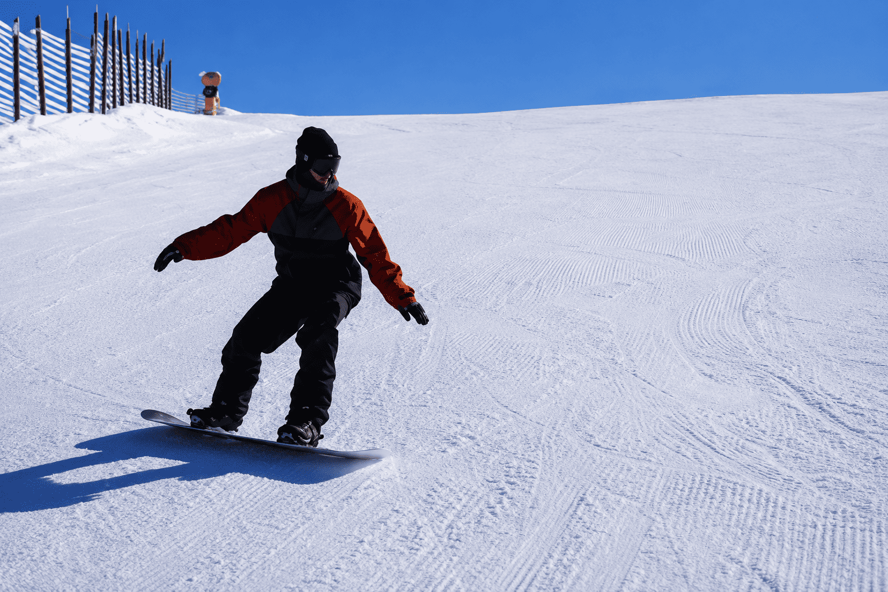

Intermediate Course
Not quite off-piste ready? Build to it here first.
Explore
Steeps, powder and Apharwat's legendary off-piste — a six-day big-mountain course with avalanche-certified guides, for confident skiers ready to unlock the whole mountain.

The Course
Gulmarg is one of the great big-mountain destinations on Earth, and this course is your key to it: steep lines, deep powder, wide bowls and tree runs off Gondola Phase 2, skied safely with guides who know every fold of Apharwat.
As much mountain-craft as technique — you'll leave a stronger, safer, more complete skier, with avalanche fundamentals and a season's worth of confidence.
₹54,000 / person · guided · Dec–Mar
Book This CourseDay by Day
Warm-up on Phase 1 to confirm technique, then a snow-safety workshop: transceiver search, companion rescue and reading avalanche terrain.
Steep groomers and firm snow: dynamic short turns, edge control and speed management for high-angle terrain.
Take it off-piste — floating in soft snow, adjusting stance and rhythm for powder on Apharwat's flanks.
Guided descents of Apharwat's bowls and sheltered tree runs, working line choice, terrain reading and group travel.
For the confident: ridgeline traverses and mellow couloirs, with careful conditions assessment and guide-led decision making.
Put it all together on a full big-mountain descent matched to the day's snow, then debrief, video review and an advanced certificate.
The Mountain
This course uses the full Gondola to Phase 2 and the off-piste bowls, ridgelines and tree runs of Mount Apharwat.
Terrain shown is illustrative. Daily run choices depend on snow, weather and avalanche conditions — always follow your instructor and ski patrol on the mountain.
Why You'll Love It
Dynamic short turns on the steeps and floating technique for Gulmarg's famous powder.
Transceiver, shovel and probe for every skier, a snow-safety workshop and certified guides.
The bowls, ridgelines, couloirs and tree runs that make Gulmarg legendary — skied safely.
The Fine Print
Good to Know
Confident parallel skiers who ski red runs comfortably and want to master steeps, powder, off-piste and Apharwat's legendary bowls with avalanche awareness. It's a guided, technique-and-mountain-craft course, not a beginner lesson.
No prior avalanche training is required — we teach the essentials and you ski with avalanche-certified guides carrying full safety kit. Solid on-piste red-run ability is the real prerequisite.
Full Gondola access to Phase 2, Apharwat's bowls and ridgelines, tree runs, couloirs and off-piste lines — matched daily to snow and avalanche conditions.
Avalanche transceiver, shovel and probe for every skier, plus helmets and guide radios. We run a snow-safety workshop and daily conditions briefings.
A maximum of four skiers per guide off-piste, for safety and the best line choice.
Off-piste spots are strictly limited for safety — reserve your advanced course dates early.